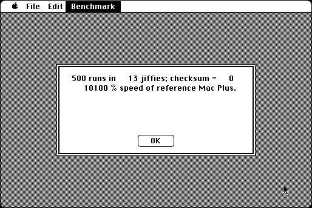

Download
SieveAhl.zip (49K) SieveAhl 1.0 repackaged into a zipped hfs disk image and checksum file. The disk image can be mounted with Mini vMac.
SieveAhl.sit (49K) SieveAhl 1.0 in the original format.
copyright: Cameron Kaiser
mod date: Aug 18, 2002
license: freeware
from url :
SieveAhl
“A Simple CPU Benchmark Set for 68K Macs.” For System 1.1 or higher.

If you find these downloads useful, please consider helping the Gryphel Project, which hosts them.
Here are the md5 checksums for the downloads, signed with Gryphel Key 5:
--------- GRY SIGNED TEXT --------- fb02a7bdb8f0cb8aa0f94da9ea1e407a SieveAhl.zip ffeca95a8ebd4844cf3563a9b4d913ed SieveAhl.sit ------- BEGIN GRY SIGNATURE ------- Gry/4Xa8CFcUzxdN/FQEcal0haWZ6o/vO9HMwCjfyHLj+Aqd3JTe4rC215BwzxYY 589uMK5mqe6xvsMFIrY17PPS8cgdPsujy46k//ykGqQYxk4LkBMV5vbmuOx+/iTA pE+MFY4WlFZjzSRzrsh8Z9EO3CAAEAcQGOeJ2OtYoXeQXBd5UpXJjqtlDFezCs+8 -------- END GRY SIGNATURE --------